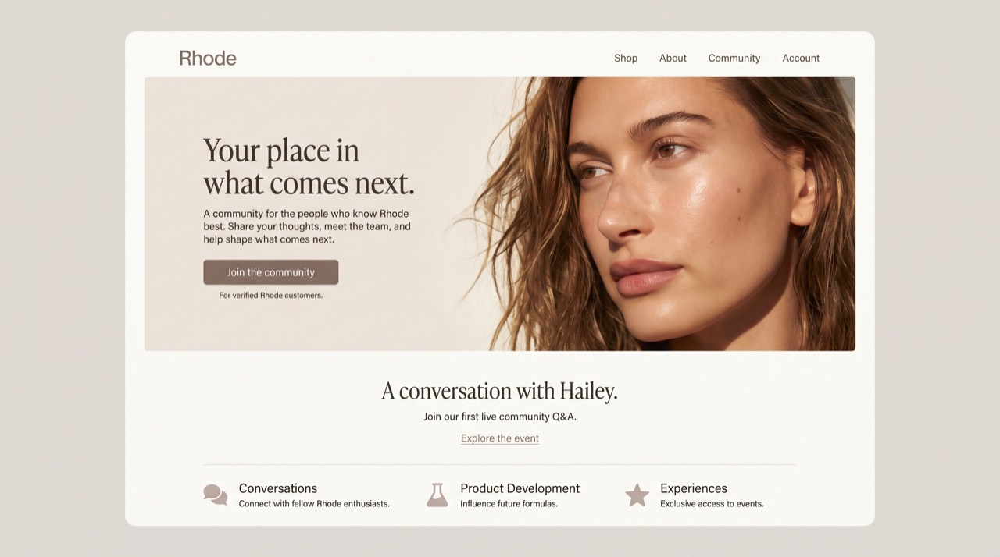
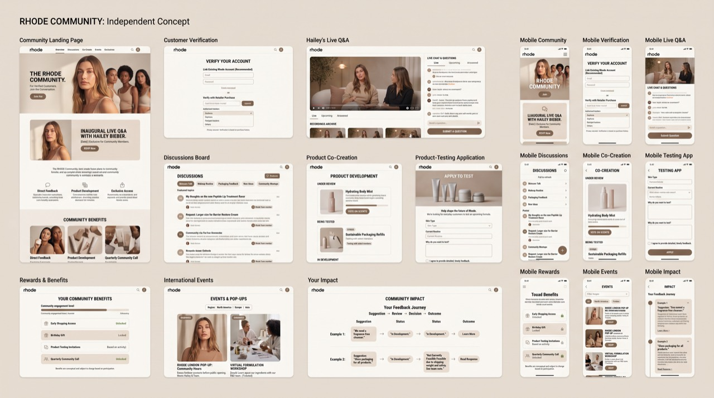
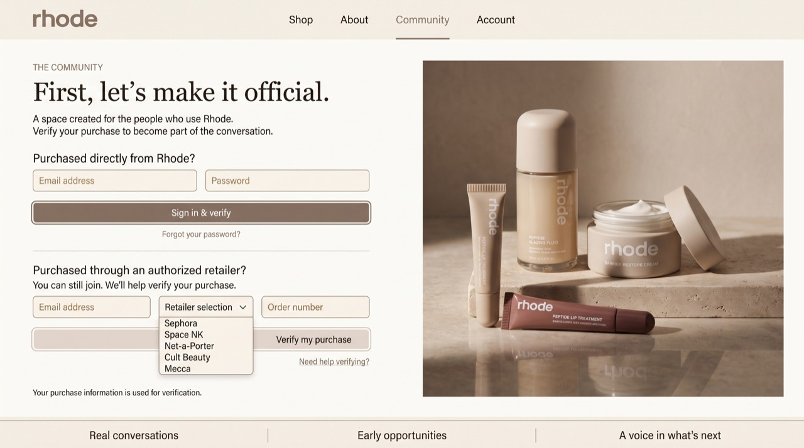
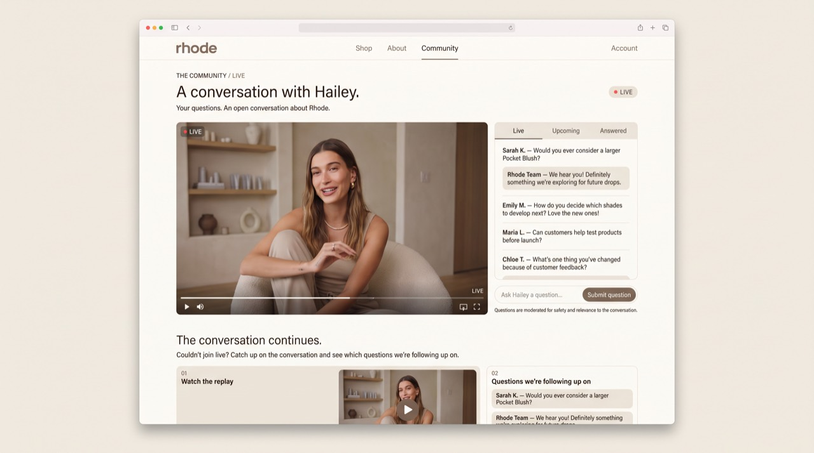
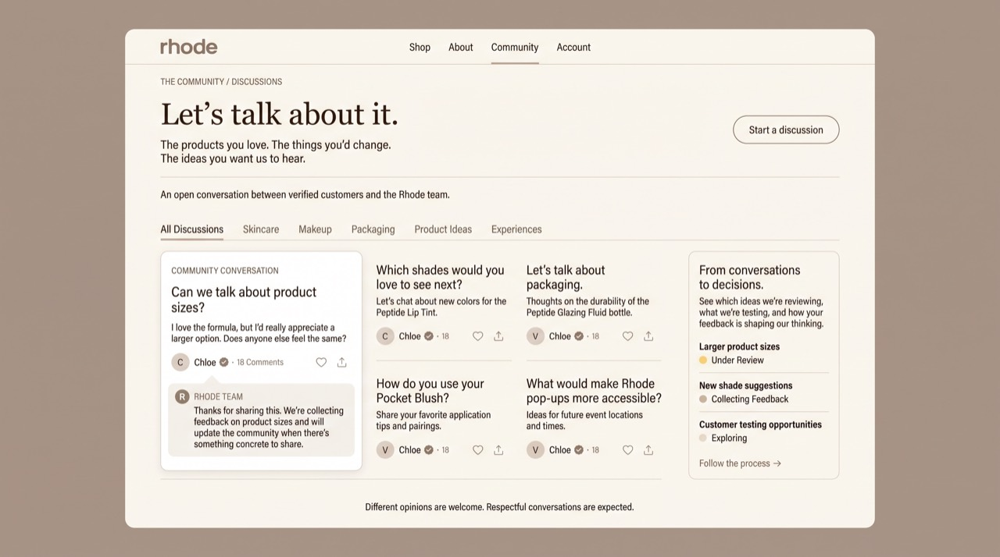

INDEPENDENT STRATEGY / INTERACTIVE WEBSITE CONCEPT
From Influence to Involvement
Independent speculative concept. Not commissioned by, affiliated with, or endorsed by Rhode. This concept is not affiliated with or endorsed by Hailey Bieber. All interfaces, event scenarios, customer comments, and proposed features are conceptual.
- Brand studied
- Rhode
- Project status
- Self-initiated, unofficial concept
- Disciplines
- Marketing Strategy · Creative Direction · Customer Experience · Community Strategy · Digital Experience Design · Experiential Marketing · UX/UI Concept · Interactive Website
The idea behind the project
Rhode already has a strong identity. Its products, visual style, and founder-led presence give people a clear sense of what world the brand belongs to. I wasn’t interested in proposing another campaign to make the brand more visible. I wanted to explore what the relationship could look like after somebody already knew the brand and had begun using its products.
That led me to a question: what would happen if a beauty brand gave its everyday customers a more active part in the conversation? Not a one-off comment box or a campaign hashtag, but an ongoing place where someone could ask a question, share an opinion about a product, suggest a change, and see what happened afterward.
Moving from a question to an experience
I developed the proposal around a verified customer community integrated into Rhode’s website. Its features are connected intentionally. Membership establishes access. Discussions create an ongoing space for honest product conversations. Suggestions and voting make it easier to surface recurring requests. Testing opportunities offer a structured way to gather more detailed experiences. Founder Q&A sessions introduce a more direct kind of conversation. An impact timeline closes the loop by showing what happens to customer input after it’s collected.
I didn’t want the concept to exist only as a presentation. I built an interactive prototype so someone could navigate the proposed experience and understand how its parts relate to one another. Designing the interface made the strategic questions more concrete: what does a user see first, what motivates them to return, where does a contribution go, and how do you make feedback visible without turning it into an empty promise?
What I paid attention to
The most important challenge was making the experience feel like a plausible extension of Rhode rather than a separate, generic social network with a beauty logo added. The interface therefore draws on the brand’s current clean, product-led visual language, while organizing community activity into clear, useful sections. I also considered how the concept could create room for criticism as well as enthusiasm. If a brand only wants praise, it doesn’t need a community; it needs another promotional feed.
The full case study goes into the membership model, founder access, feedback process, product co-creation, experiential possibilities, and the rationale for measuring participation. The strategy PDF explains the proposal in depth; the interactive website lets visitors try the flow themselves.

01 / Introduction
The visibility.
The relationship.
Rhode has built an instantly recognizable world around beauty, personal influence, visual consistency, and cultural relevance. Its founder-led identity and focused product philosophy give the brand a distinctive place in contemporary beauty.
The opportunity I explore here is what happens after that visibility becomes a purchase. How could Rhode develop deeper relationships with its everyday customers, giving them meaningful access to conversations, product development, and experiences?
This is an independent strategic proposal. It studies the brand’s public-facing world and develops a possible next layer of customer participation; it does not describe work delivered for Rhode.
02 / The observation
Access is not the same
as participation.
Rhode’s influencer-driven visibility is one of its strengths. The brand’s most recognizable advocates, however, are not necessarily the same people as its broader customer base.
My hypothesis is that a more direct relationship with verified customers could complement this influence. The proposal asks whether people who buy and use Rhode could become active contributors, with access that does not depend on the size of their own audience.
This is not a claim that Rhode overlooks customers or lacks customer research. It is a question about how participation might become more visible, accessible, and continuous within the brand experience.
03 / The idea
A place in Rhode
customers can shape.
A verified-customer community integrated directly into Rhode’s existing website. Eligible customers could express opinions, submit ideas, participate in product feedback, attend live conversations, apply for testing opportunities, and follow how their contributions are considered.
The community would need standards as much as aesthetics: verified, not viral; honest, not polished; useful, not performative. Constructive criticism should have a place alongside enthusiasm. Participation should lead to review, testing, decisions, or a clear explanation.
04 / The digital ecosystem
Something to see,
use, and return to.
The early exploration connects desktop and mobile participation: conversations, co-creation, testing applications, benefits, events, and a visible feedback journey. It is an overview of the wider vision, rather than a finished interface specification.

Four functions organize the experience. Ask: live questions and archived conversations. Shape: product requests, feedback, voting, and visible statuses. Test: structured, inclusive opportunities to try suitable prototypes. Belong: participation benefits and experiences beyond a launch calendar.
05 / Customer access and verification
A relationship to the brand.
A voice in the community.

The proposed entry process checks eligibility through a direct-purchase account or a separate authorized-retailer route. The strategic principle is customership: access begins with buying and using the products, rather than follower count.
Every verified member could contribute ideas, join discussions, vote, attend digital sessions, and receive updates. Further opportunities, such as selected trials or invitations, would need transparent criteria that recognize meaningful participation without making spending the measure of whose feedback matters.
The verification flow is conceptual. Retailer integrations, evidence requirements, privacy, accessibility, and support would need validation before development. Retailer names shown in the mockup illustrate an access route and do not imply confirmed technical partnerships.
06 / Founder access and engagement
Lead with a
live conversation.

The proposed inaugural event is a live Q&A with Hailey Bieber and the Rhode team for verified customers. Questions come from members, with follow-ups and active moderation. A conversation should allow uncertainty, disagreement, and answers that are not ready yet.
This format demonstrates the relationship being proposed more clearly than a highly scripted promotional film. A direct announcement could introduce the invitation without staged reactions or an emotional montage: one camera, one conversation, one invitation.
The conversation should remain useful afterward. Recordings and unanswered questions could stay accessible, with a visible list of what the team is following up on. This is a proposed event, not a confirmed appearance; the comments and responses in the screen are illustrative.
07 / Transparency and participation
Conversations that
lead somewhere.

Customers could discuss product sizes, shades, packaging, and experiences openly. Criticism, suggestions, and team responses should remain visible within a respectful, actively moderated community.
Product-development suggestions and voting could help identify questions worth exploring. A progress view would connect submissions to review, appropriate testing, and a decision. Not every idea becomes a product; explaining why something does not progress is part of the trust mechanism.
Testing opportunities would require qualified product teams, appropriate safety review, inclusive recruitment, and structured feedback. Votes would inform consideration, not replace formulation expertise or promise a launch.
08 / Beyond the screen
Participation has a
physical dimension.
Community and loyalty benefits could connect ongoing participation to selected trials, workshops, and customer-first gatherings. Events could bring together newer and long-term customers, with free access opportunities and paid workshops where appropriate.
The experiences should offer something to do or understand: explore packaging, shades, and storytelling; learn from the team; or join supervised demonstrations where feasible. Their value would extend beyond a place to take photographs.
International events and product experiences would depend on customer demand, distribution, local feasibility, and suitable partners. The concept proposes a direction, not confirmed destinations, invitations, or operational capabilities.
09 / Creative direction
Unmistakably Rhode.
A new way to participate.
The aim is to extend Rhode’s visual identity into a new digital experience. Cool white and gray backgrounds, clean typography, minimal layouts, thoughtful photography, and accessible interactions give the proposed community a recognizable place within the brand.
The landing page makes the invitation clear; verification gives access a rationale; the live event makes interaction tangible; and discussions make follow-through visible. Each screen serves a strategic role beyond its visual treatment.
10 / Business rationale and rollout
Start with credibility.
Earn the right to expand.
The initiative explores stronger customer relationships, returning participation, retention, customer-led product insights, and a more balanced approach to brand access. These are strategic objectives, not proven outcomes.
- Validate. Research customer needs and feasibility; define verification, privacy, moderation, and participation rules.
- Open. Pilot the member hub, a live founder conversation, and visible feedback updates.
- Prove. Assess useful participation, structured trials, decision statuses, and benefits.
- Expand. Explore physical experiences and selected international pilots only where evidence and feasibility support them.
11 / Proposed measurement
Being worth
listening to.
A pilot would need agreed baselines, practical definitions, and appropriate consent. Potential indicators include verified membership, meaningful participation, returning members, customer satisfaction, and whether members feel heard.
Operational measures could track feedback response times, suggestions reaching a visible decision, product feedback acted upon, and testing participation. Community-event attendance and repeat purchases could be considered alongside retention, with care around attribution.
No campaign has been implemented through this concept. There are no reported performance results, invented research findings, or promised conversion improvements.
12 / My conclusion
From being seen
to being involved.
Rhode does not need to replace influence. This proposal asks how involvement could become another part of what the brand stands for: a relationship that gives customers a way to contribute and a reason to return.
Further customer, competitor, legal, privacy, and feasibility research would be needed before implementation. Public brand references used in the original study include Rhode’s brand story, Pocket Blush, and the product collection.
Self-initiated and unofficial. This project was not commissioned, approved, developed, or implemented by Rhode. It does not represent an employment, consultancy, collaboration, or campaign relationship.